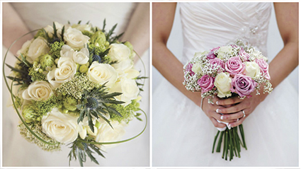
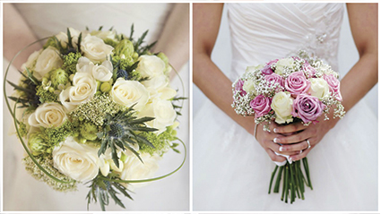

Бесспорно, важная часть образа невесты - свадебный букет, и он привлекает к себе не меньше внимания, чем платье или причёска. Но свадебный букет – это не просто красивые цветы в руках невесты, но ещё и стильный аксессуар, который вместе с тем является символом любви и чистоты чувств. Самые популярные цветы в букете невесты - пионы и розы, герберы придадут букету яркость, фрезия - нежность, множество других разных цветов сделают букет уникальным, стильным, идеально дополняющим Ваш образ! Для того, чтобы букет был необычным, используют цветы хлопка, ягоды или украшения. Выбор букета невесты - это особый ритуал! При выборе цветов для букета очень важно учитывать множество моментов. Изначально следует узнать у флориста, какие сорта цветов будут цвести в сезон свадьбы. Затем стоит выбрать свадебную палитру и сами цветы.
Пионы - самые распространенные цветы, выбираемые невестами для свадебного букета. Такую популярность цветок получил не только из-за своей нежности, красоты и пышного бутона, но и из-за значения: пион - это крепкий и счастливый брак!
Второе место по популярности после пионов занимает роза. Розовая роза означает грацию, любовь и нежность, розово-белая роза - вечную любовь, персиковая - сближение возлюбленных. Розы в свадебном букете - счастливая жизнь!

Вне зависимости от значения, цветы на свадьбу все таки стоит выбирать по вкусу и настроению. Традиция верить в приметы давно прошла, и многие невесты, несмотря на все предрассудки, выбирают желтые и черные цветы, и даже гвоздики.
Собирая букет невесты, наши флористы заботятся о том, чтобы букет был удобным и не слишком тяжёлым, ведь невеста будет держать его в руках на протяжении всего дня. Букет должен не только удобно лежать в руке и сохранять свежесть и безупречный вид в течение длительного времени, но и сочетаться по стилю и цветовой гамме со свадебным платьем, гармонировать с другими украшениями.
Если Вы не хотите расставаться со своим букетом даже после торжества, то стоит заказать дубль-букет, который будете бросать подружкам. Цель нашей работы - собрать для Вас стильный, оригинальный и неповторимый свадебный букет, воплотив в жизнь Ваши самые смелые идеи!!!
 
